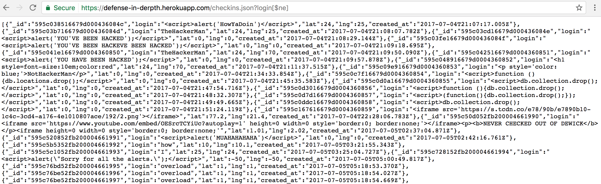
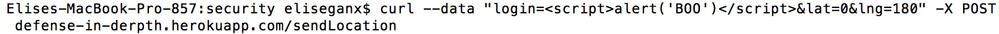
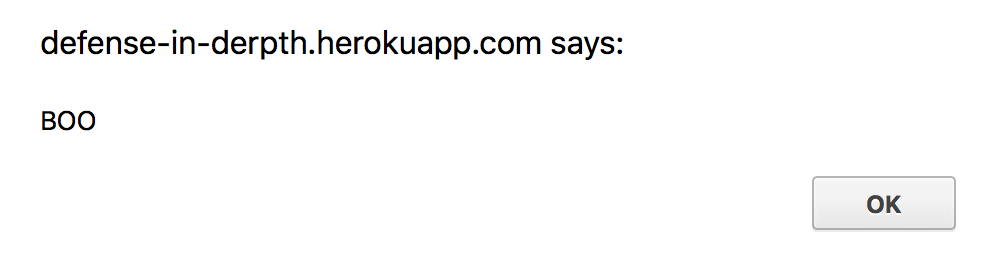
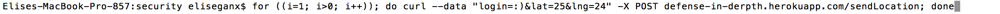

Security and Privacy Assessment of Not Foursquare
By Elise Gan - 7/5/17
Introduction
This assessment tests the security of the Not Foursquare web application provided. This web application prints a list of logins to the site and also stores them to an array. It also allows for users to search for check-ins made by logins. This document's purpose is to identify vulnerabilities in the web application and to suggest solutions for how to fix those vulnerabilities.
Methodology
OWASP's Top 10 list of security risks was used as a reference to test the web application. Testing was first done by looking at the source code given when viewing the page source on Google Chrome. Then, the source code given was examined. Multiple vulnerabilities were found using curl and changing the URL of the site.
Abstract of Findings
The vulnerabilities in the web application exist because user input is easily trusted. Many vulnerabilities allow for an attacker to add any string as a login when checking in. Though, the site does prevents attackers from adding fields to the database.
Issues Found
Injection to Show Data
- Location: The /checkins.json page of the web application.
- Security Risk: High; Data about the users can be taken from the web application.

- The vulnerability was found after changing around the query string of the URL. In the code, it is seen that, when a login is searched using the URL, the check-ins associated with the searched login are printed. Adding [$ne] to the URL reveals all of the checkins to the page and even the JavaScript that other students used in their logins. Because the query string can be changed, an attacker could potentially look up a certain user's login information.
- This issue could be resolved by keeping data about the logins separate from commands.
Cross-Site Scripting to Add JavaScript
- Location: The main page of the web application - affected by /sendLocation
- Security Risk: High; Malicious JavaScript can be inserted as a login and will be shown on the page.


- The vulnerability was found after looking at the code given. The user is allowed to input three different values: login, lat, and lng. Lat and lng are both checked to see whether or not they are float values, but since any string can be entered as the login, attackers can push malicious Javascript onto the page. This includes, and is not limited to, adding alerts to the page as shown in the screenshot above.
- This issue could be resolved by filtering user input. By searching for characters commonly used in code and disallowing them from being used in the user input, code could not be pushed onto the web application.
Cross-Site Scripting to Crash Website
- Location: The main page of the web application - affected by /sendLocation
- Security Risk: High; Could crash the web application

- The vulnerability was found after playing with added malicious JavaScript to the site. By using curl and and loop written in C++, the same form data can be sent to the site over and over again indefinitely.
- This issue could be resolved by, once again, filtering user input.
Conclusion
The issues found with the web application make it easy for an attacker to submit any sort of data as login info. Because of this, no user input can really be trusted. Things that could be added to the web application to make it more secure are to add session ID's and to encrypt sensitive data, such as check-in info.